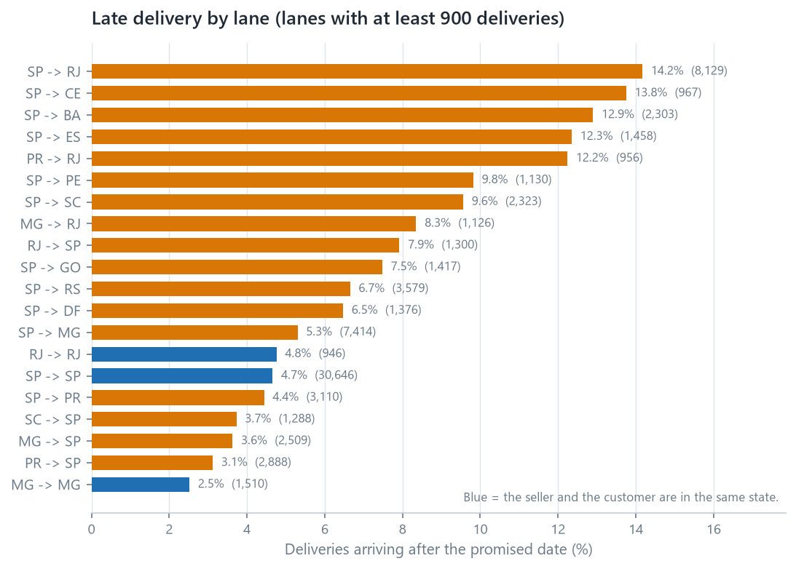
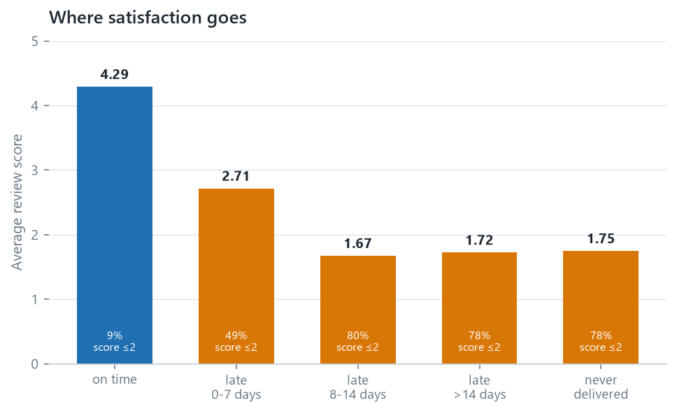

flowchart TB
A["São Paulo to Rio<br/>8,129 deliveries, 14.17% late"] --> B{"Do the sellers<br/>cause it?"}
B -- "no" --> C["They dispatch in about three days<br/>on every lane"]
C --> D{"Is Rio hard to reach?"}
D -- "no" --> E["Rio's own sellers deliver<br/>late 4.67% of the time"]
E --> F["The crossing is the problem,<br/>and its promise is the thinnest:<br/>27 days against 30.3 for the farther SP to RS lane"]
Decision memo — Delivery performance
One page. What the data says, what it costs, what to do.
Prepared for: Head of Operations
Prepared by: Anderson Tavares
Method, full reasoning and limitations are in the 01 · Retail Analytics report.
Bottom line
Late delivery is rare (6.8% of deliveries) and is the strongest signal of customer dissatisfaction in this dataset. It is not spread evenly and it is not the sellers. The delay is created in the crossing between São Paulo and Rio, which carries two thirds of Rio’s orders and is late 14.2% of the time.
The finding
- 6,535 of 96,476 deliveries arrived after the promised date, 6.77%.
- A late order averages a review score of 2.27; an on-time order averages 4.29.
- Past a week late, ~80% of customers give one or two stars, against 9.27% of on-time customers.
- São Paulo is late on 4.49% of deliveries, Rio de Janeiro on 12.10%, Bahia on 12.16% and Ceará on 13.76%.
- The sellers are not the cause. Sellers dispatch in about three days on every lane. A Rio seller delivering inside Rio is late 4.67% of the time, matching São Paulo’s 4.63%, and 53 of the 65 sellers that ship to both states are worse into Rio.
- The lane is the cause. São Paulo to Rio carries 8,129 of Rio’s 12,353 deliveries and is late 14.17%. Every lane that stays inside one state sits at 4.8% or below.


What it costs
Rio de Janeiro recorded 12,353 deliveries and 1,495 late orders, and 8,129 of those deliveries came from São Paulo sellers. At São Paulo’s 4.49% late rate, roughly 940 of the 1,495 would not have been late.
Those 940 orders would have been expected to produce about 370 fewer one- and two-star reviews, applying the observed review behaviour of late orders (49.36% scoring ≤2) against on-time orders (9.27%).
This is an association, not a causal estimate. I have not shown that making a delivery on time causes the better review, only that the two occur together, and because the dataset carries no cost or margin data, none of this can be converted into profit.
Recommendation
Work the São Paulo to Rio lane, and stop looking for a bad seller. The sellers dispatch on schedule and Rio’s own sellers are punctual, so the delay is in the 9 median days the parcel spends between the two, and in the 379 orders that arrive more than two weeks after the promise. The question for the carriers on that corridor is why the ninetieth percentile is 31 days on a lane whose median is 12.8.
The seller question is answered by the data. The carrier question is not, and it is the one worth asking.
Second, widen the promise on that lane. The average parcel arrives 11.18 days early and 14% of the lane is still late. Three more days on the promise would report 11.60% instead of 14.17%, and seven more would report 8.37%. Widening a promise moves the measurement rather than the parcel, so it belongs alongside the operational question above, not instead of it.
What would change my mind
- If the lateness on the São Paulo to Rio lane concentrated in a few carriers or a few warehouses, it would become a contract or a routing problem rather than a corridor problem. The dataset has no carrier identifier, so that test needs the operational side rather than another query.
- If late-delivery customers differ systematically (different products, different basket sizes, different expectations), the review gap may partly reflect who they are rather than what happened to their parcel. Comparing review scores within the same product category and order value would test this.
- If the “never delivered” group scores better than the “8–14 days late” group for a specific reason (refunds, communication, expectations), then expectation management may matter as much as speed. The data shows the pattern (1.747 against 1.672); I have not established why.